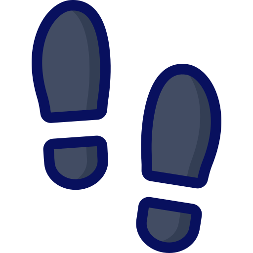

Pueblos más bonitos de Cataluña
...según encuesta a blogueros de viaje

Esta ha sido una iniciativa de los chicos del blog MilViajes (donde hay más pueblos referenciados)
El resultado de los 10 primeros pueblos ganadores se muestra en este site. ¡Agrega el tuyo!
- Próximo Destino.(Meritxell Beltrán): Las casas Alcanar
- Petits Viatgers. (Montse Delgado): Siurana
- viaje de libros.(Silvia Monasterio): Calella de Pallafrugell
- puntes de viaje-blog privado. (María Teresa Trilla): Prades
- sábados viajando. (Virginia y Fran): Tossa de Mar
- Con arena en la mochila. (Robert y Eli): Besalú
- Comete el mundo. (Henar y Aitor): Pals
- Quadernsde bitàcola. (Cèlia y Enric): Montblanc
- Viatges Pedraforca. (Daniel): Castellar de n'Hug
- Estem de vacances. (Xavi y Txell): Peratallada
- Este es pueblo que yo aconsejo para visitar!Rupit
Y para terminar a continuar dejo un enlace con los 16 mejores camino de ronda de la costa brava y y otro con consejos (como material a llevar), muy aconsejable hacer!
 Caminos de ronda
consejosCaminos de ronda